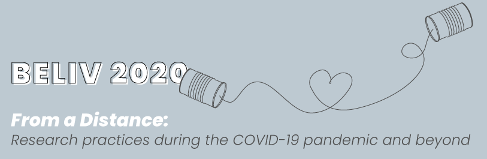

Keynote
Jon Tennant
Title:
Reproducibility: Or, how I learned to stop worrying and love Open Science.
Summary:
You can barely go anywhere within research these days without hearing the term ‘reproducibility crisis’. It is becoming more and more common for meta-analyses of research to fail to reproduce key discoveries within the scholarly literature. At the same time, researchers are under increasing pressure to ‘publish or perish’, embellish their research findings, and prioritise impact/prestige of publication venue over research rigour. This is clearly not how science is supposed to work. One of the key aspects of the global Open Science ‘movement’ is to help to solve these issues to do with incentives, questionable research practices, and a lack of reproducibility or repeatability across different research disciplines. During this talk, you will hear about the wave of new practices and services to help increase the reproducibility of research across different research fields, from open notebook science, pre-registrations, through to mandatory code and data sharing. This is still very much a new and ongoing evolution that is helping to transform the way research is conducted, but is already having a huge impact in helping to improve the reliability of modern science. Researchers who are adopting and supporting these practices are already becoming leaders in their respective fields and helping to drive real change.
Speaker Bio:
Jon finished his award-winning PhD at Imperial College London in 2017, where as a palaeontologist he studied the evolution of dinosaurs, crocodiles, and other animals. For the last 7 years or so, he has been a fervent challenger of the status quo in scholarly communication and publishing, and became the Communications Director of ScienceOpen for two years in 2015. Now, he has turned independent in order to work on building the Shuttleworth-funded Open Science MOOC to help train the next generation of researchers in open practices. He has published papers on Open Access and Peer Review, lead the development of the Foundations for Open Science Strategy document, and is the founder of the digital publishing platform paleorXiv. Jon is also an ambassador for ASAPbio and the Center for Open Science, a Mozilla Open Leadership mentor, and the co-runner of the Berlin Open Science meetup. He is also a freelance science communicator and consultant, and has written a kids book called Excavate Dinosaurs. He tweets far too much as @protohedgehog, and can often be found bouncing around the world at conferences talking about open science, and antagonising Elsevier.
In conjunction with

In conjunction with